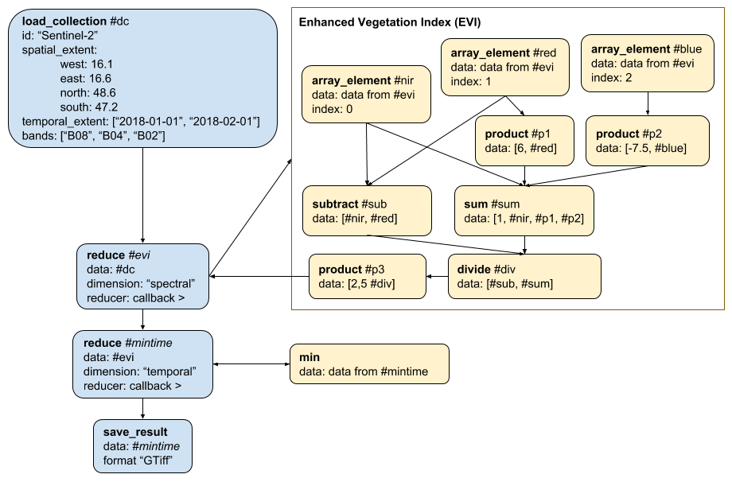

openEO API v0.4.0 released
Today, the openEO Consortium released the new version 0.4.0 of the openEO API. The following blog post will give a short overview over the most notable changes and additions to the API specification.
New process catalogue and process graph changes
The focus of this release was the definition of a full process catalogue, which is now in implementation by the back-ends. We defined a set of over 100 processes, which can soon be used for remote sensing and related tasks. For this, we had to introduce a new encoding for the process graphs, which now allows parallelism, callbacks and more.
The following image shows visually how a user could derive minimum EVI measurements over pixel time series of Sentinel 2 imagery:

Once implemented, we plan that the following Python client code could be used to generate the process graph to send it to a back-end:
import openeo
session = openeo.connect("https://example.openeo.org")
s2_radio = session.imagecollection("Sentinel-2", spatial_extent = {"west": 16.1, "east": 16.6, "north": 48.6, "south": 47.2}, temporal_extent = ["2018-01-01", "2018-02-01"])
blue = s2_radio.band('B02')
red = s2_radio.band('B04')
nir = s2_radio.band('B08')
evi_cube = (2.5 * (nir - red)) / ((nir + 6.0 * red - 7.5 * blue) + 1.0)
result = evi_cube.reduce("temporal", "min").save_result("GTiff")In JavaScript it is planned to work as follows:
function eviReducer(b, data) {
var blue = data.at(0);
var red = data.at(1);
var nir = data.at(2);
return b.product([
2.5,
b.divide([
b.subtract([nir, red]),
b.sum([1, nir, b.product([6, red]), b.product([-7.5, blue])])
])
]);
}
var connection = OpenEO.connect("https://example.openeo.org");
var builder = connection.buildProcessGraph();
var result = builder.loadCollection("Sentinel-2", {west: 16.1, east: 16.6, north: 48.6, south: 47.2}, ["2018-01-01", "2018-02-01"])
.filterBands(["B02", "B04", "B08"])
.reduce("spectral", eviReducer)
.reduce("temporal", (b, data) => data.min())
.saveResult("GTiff");Similarly, it would work in the R client. You can also check the process graph documentation if you’d like to know how this algorithm looks as a process graph.
Other improvements
We also updated our Data Discovery to be compatible with the most recent version of STAC, v0.6.2. In the last months, openEO contributed several extensions to the STAC specification such as an extension to describe Synthetic-Aperture Radar (SAR) data or an extension to describe Data Cubes.
Despite the process and data discovery, we generally improved the discovery of openEO back-ends. For example, the API now also allows clients to automatically detect supported API versions at the back-end, so that users don’t need to keep track of that and can always connect to the same URL without worrying about compatibility between clients and back-ends. Our approach to user-defined functions (UDFs) was also better integrated withing the API. UDF runtimes can be discovered now and well-defined processes allow executing UDFs. Many more improvements were incorporated into the API specification based on feedback from the review meeting, discussions with users and implementations (see the full changelog).
Next steps
This is the API version, which is targeted towards getting the first more universally usable version of the openEO clients and back-ends released. We will work hard now to implement the back-ends and clients to comply with the new API version and will follow up with a new blog post once this is achieved. Afterwards, all interested parties can use clients and back-ends to get a first solid impression of the project. In the meantime, it is already possible to make experiments with the back-ends and clients working on the API version 0.3.1. Please contact us to get more information about it. Having said that, the new version is not the last one and we will continue to improve the API, client and back-ends. So any feedback is highly appreciated and can be sent our way via GitHub issues in the corresponding GitHub repositories or via any of the other contact options.